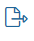

На странице Рабочий календарь указываются рабочие, выходные и праздничные дни, а также продолжительность рабочего дня. Эта информация используется в бизнес-процессах при расчёте срока выполнения задач и при запуске по расписанию.
Например, процесс выдачи заработной платы запускается ежемесячно 10 и 20 числа. Если эти даты выпадают на выходной, старт процесса должен переноситься на предыдущий рабочий день. Для этого в настройках стартового события можно задать учёт рабочего календаря.
Начало внимание
Настраивать рабочий календарь может только администратор системы.
Конец внимание
Перейдите в раздел Администрирование > Рабочий календарь. На странице отображается режим работы компании, который по умолчанию используется для всех сотрудников.

Начиная с версии 2024.11 в ELMA365 вы можете:
- изменить рабочий календарь, продолжая использовать его по умолчанию для всех пользователей;
- создать рабочий календарь с нуля или настроить несколько календарей с индивидуальным режимом работы и назначить их для разных сотрудников;
- создать производственный календарь с праздничными и укороченными днями, которые применяются в вашей компании, и привязать его к определённому или всем рабочим календарям;
- импортировать рабочий и производственный календари, настроенные в другой программе.
Настройка рабочего календаря в системе версии до 2024.11
Обратите внимание, указать прошедшую по календарю дату как укороченный или праздничный день нельзя. Вы можете удалить установленный день, нажав значок корзины.
Вы можете просмотреть и добавить в рабочий календарь укороченные и праздничные дни за прошлый период, используя кнопку Загрузить за текущий год. Данные можно отобразить последовательно за каждый год, начиная с текущего и до 1970 года. Название кнопки изменяется по мере загрузки данных. Рассмотрим пример, в котором 2025 год является текущим:
начало внимание Если вы изменяете настройки рабочего календаря, нужно повторно опубликовать процессы, в которых установлены ограничения времени с учётом рабочего календаря. Тогда к заданным настройкам применится новый график работы. конец внимание |

Создать рабочий календарь
С версии ELMA365 2024.11 в разделе Администрирование > Рабочий календарь вы можете настроить рабочий календарь вашей компании с нуля или создать несколько календарей. Для этого:
- В правом верхнем углу страницы нажмите кнопку Новый календарь.
- В открывшемся окне заполните поля:
- Название* — введите наименование календаря;
- Тип рабочего графика — вы можете распланировать занятость сотрудников по рабочим неделям или по рабочим сменам. В выпадающем списке выберите соответствующий тип.

Для календаря по сменам добавьте количество рабочих и выходных дней в одну смену. Например, если сотрудники работают по сменам 2/2, добавьте четыре дня и два из них отметьте флажком как рабочие.
Чтобы настроить разные часы работы для каждого рабочего дня, перейдите в расширенный режим редактирования календаря, нажав в правом верхнем углу страницы соответствующую кнопку. Рядом с днём недели снимите флажок с опции Стандартный режим и установите время работы и перерывов.

Вернуться в обычный режим настройки календаря нельзя. При редактировании календарь всегда будет открываться в расширенном режиме.
- Для учёта праздничных и укороченных дней в рабочем календаре выберите предварительно созданный производственный календарь из выпадающего списка.
Вы можете настроить производственный календарь позднее и прикрепить его к рабочему календарю в режиме редактирования.
- Нажмите кнопку Создать.
Карточка нового календаря отобразится на странице, и новый режим работы будет доступен в системе. Вы можете:
- сделать календарь по неделям рабочим календарём компании и использовать его по умолчанию для всех работников;
- закрепить календарь за определёнными пользователями.
При расчёте срока выполнения задач применится указанный для сотрудника рабочий календарь.
Создать производственный календарь
Чтобы учитывать государственные праздники и укороченные дни, настройте производственный календарь и прикрепите его к рабочему календарю. Вы также можете задать в производственном календаре дополнительные праздники, которые отмечаются в вашей компании, например профессиональные.
Для этого:
- Перейдите на страницу Администрирование > Рабочий календарь и в правом верхнем углу нажмите Производственный календарь.
- На открывшейся странице вы можете:
- перейти в шаблон для заполнения Производственный календарь и добавить в него праздничные дни;
- нажать кнопку + Производственный календарь и настроить календарь с нуля.
- В настройках введите название календаря и выберите год его действия.

- Добавьте укороченные и праздничные дни, используя кнопку Добавить:
- установите дату. Указать прошедшую по календарю дату как укороченный или праздничный день нельзя;
- выберите тип дня:
- Исключительный — рабочий день с нестандартным временем работы, например укороченный;
- Выходной — нерабочий день, например праздничный;
- добавьте краткую информацию об исключении;
- для исключительного типа дня укажите часы работы и добавьте время перерыва.
- Таким образом отметьте все исключения на календарный год, в том числе 1, 2 января и т. д. Чтобы удалить установленный день, нажмите значок корзины.
- Завершите настройку, нажав кнопку Создать.
- Примените исключения в рабочем календаре. Для этого при создании или редактировании рабочего календаря выберите производственный календарь в соответствующем поле.
Укороченные и праздничные дни отмечаются:
- в личных календарях сотрудников — зелёным цветом;
- в выпадающем календаре при выборе значения в поле типа Дата/Время — красным цветом.
Использовать рабочий календарь для всей компании
Режим работы сотрудников, расчёт времени выполнения задач и запуск бизнес-процессов зависят от рабочего календаря. Чтобы установить один календарь по умолчанию для всех сотрудников компании:
- Перейдите в Администрирование > Рабочий календарь.
- Выберите нужный календарь по неделям, нажмите значок три точки.
- Нажмите Использовать по умолчанию.
После этого календарь отмечается значком звёздочки и применяется для всех сотрудников без индивидуального режима работы.
Назначить индивидуальный рабочий календарь для пользователя
Рабочий календарь можно закрепить за определённым сотрудником. Тогда сроки выполнения задач для этого человека будут рассчитываться в соответствии с индивидуальным графиком.
Сделать это можно следующими способами:
- в разделе Администрирование > Пользователи выберите сотрудника и отредактируйте его карточку. В поле Рабочий календарь укажите календарь, по которому пользователь будет работать;
- укажите рабочий календарь при приглашении пользователя в компанию;
- назначьте календарь сразу нескольким пользователям с помощью скрипта на языке TypeScript. Подробнее об этом читайте в справке ELMA365 TS SDK.
Вы также можете запланировать изменение рабочего графика сотрудника с определённой даты, используя в его карточке кнопку рядом с полем Рабочий календарь.
График работы сотрудника и запланированные изменения режима работы отображаются в настройках профиля пользователя.
Импорт рабочего и производственного календаря
Вы можете загрузить в ELMA365 календарь, настроенный в другой системе. Например, производственный календарь с заданными государственными праздниками.
Для этого:
- Создайте файл с данными в формате .csv и упакуйте его в .zip-архив.
- В ELMA365 перейдите в раздел Администрирование > Рабочий календарь:
- для рабочего календаря — в правом верхнем углу страницы нажмите кнопку
 ;
; - для производственного календаря — нажмите Производственный календарь и в правом верхнем углу страницы нажмите .
- Загрузите файл с компьютера и нажмите кнопку Импортировать.
Редактировать, экспортировать и удалить календарь
Вы можете изменить, выгрузить в другую программу и удалить рабочий и производственный календари.
Чтобы выполнить эти действия с рабочим календарём:
- Перейдите на страницу Администрирование > Рабочий календарь.
- Нажмите в карточке нужного календаря значок три точки.
- Выберите действие:
- редактировать — скорректируйте режим работы, а также привяжите или выберите новый производственный календарь для учёта праздничных и укороченных дней. Если вы изменяете рабочий календарь, нужно повторно опубликовать бизнес-процессы, в которых установлены ограничения времени с учётом этого календаря. Тогда к заданным настройкам применится новый график работы;
- экспортировать — вы можете скачать рабочий календарь из ELMA365 в файл формата .csv и использовать его в другой программе. Чтобы добавить в выгружаемый файл данные связанного производственного календаря, в окне экспорта включите опцию Экспортировать производственный календарь;
- удалить — календарь, который не используется по умолчанию, можно удалить. Если удалённый календарь был закреплён за определёнными сотрудниками, их режим работы изменится согласно рабочему календарю по умолчанию.
Все производственные календари хранятся на странице Рабочий календарь > Производственный календарь. Вы можете выполнить с ними следующие действия, используя значки:
 — отредактировать календарь;
— отредактировать календарь;- — удалить. Если производственный календарь привязан к рабочему календарю, то исключения перестанут учитываться. Ко всем дням применится настроенный режим работы;
-  — экспортировать производственный календарь. Сформированный файл формата .csv можно использовать в другой программе.